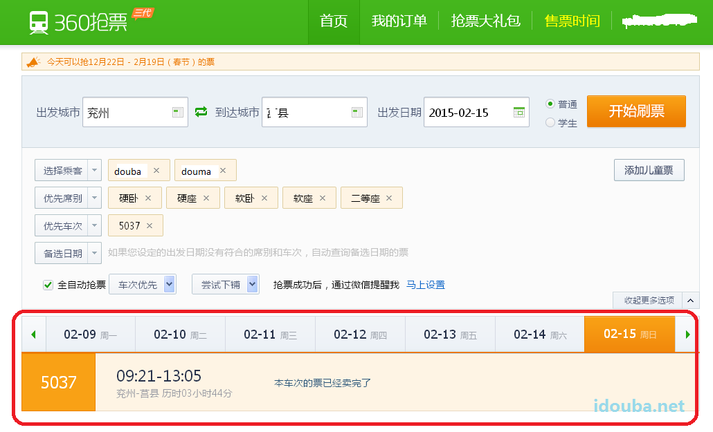
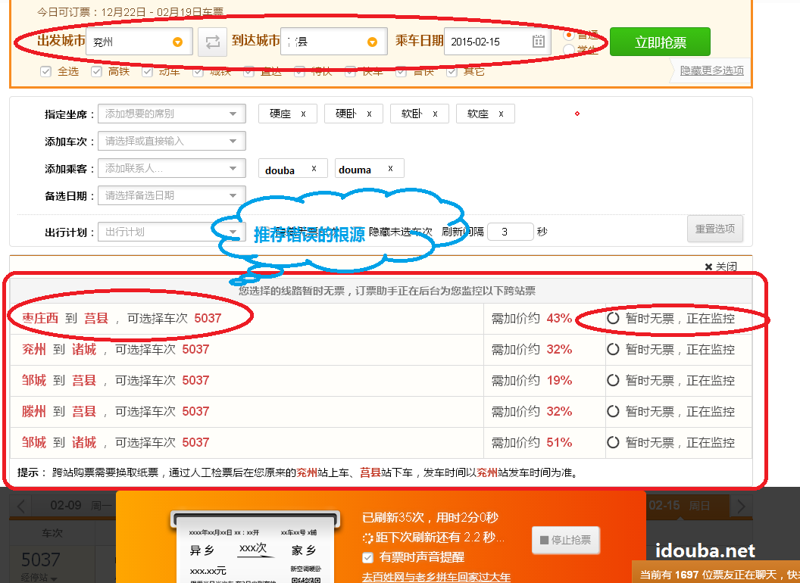
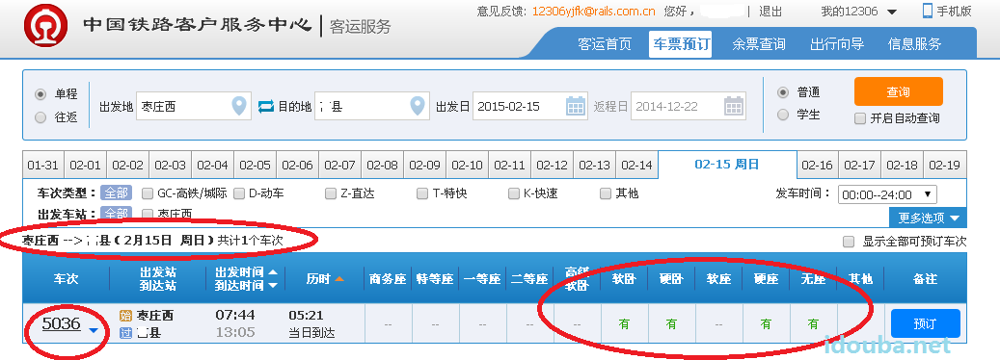
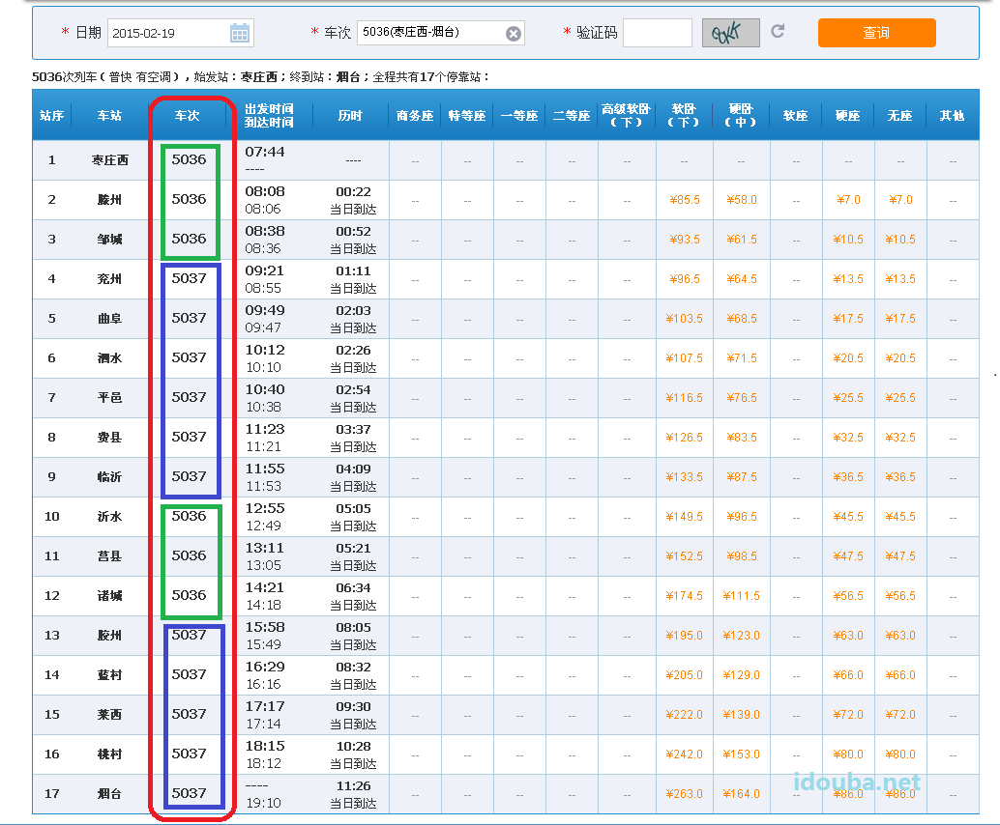
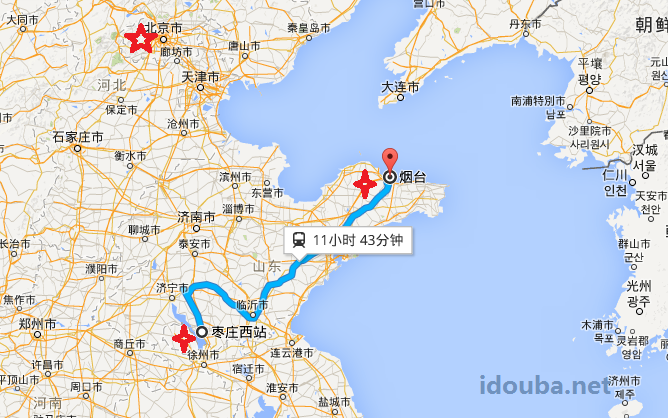
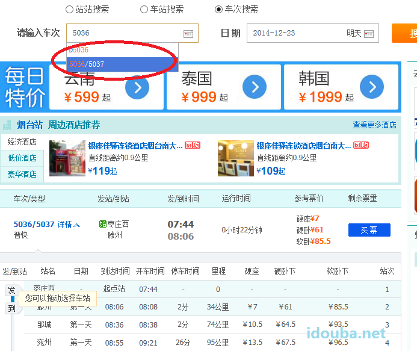

实际抢票体验描述和分析“猎豹抢票跨站推荐功能有票刷不到”的疑似bug
前言
快过年了，又到了一年抢票时。今年douba和douma计划要带着doudou回姥姥家。昨天在家用抢票软件居然发现了一个bug，那就是在猎豹抢票中跨站推荐的车票几天里一直是没有，但是在12306手动尝试不同的跨站可以买到票，怀疑是猎豹在处理车次信息的时候对于变化的车次没有考虑到所致。在文中以实际操作尝试对这个bug做个比较详细的描述，并加上一点定位和分析，希望可以帮助这款神器的使用者和开发者提供些有用信息。按照douma的指示，今天上班来中午吃完饭不休息了，匆匆写下发表出来，供其他焦急的抢票战友们借鉴。不要只是懒懒的用工具刷，过于依赖神器，该动手时候要动动手才有可能抢到票。祝大家都能抢到心仪的车票。
正文
在本次战役中，除了360三代外，douma推荐了另外一款抢票神器猎豹。并用自己的成功经验诠释了下该神器的与其他工具的比较优势，那就是除了普通工具都有的自动刷票功能外，还提供了一款推荐功能。可以提示用户购买超出区间的余票，并很nice很体贴的提示出票价超了多少（类似信息检索技术中的查询扩展，都是为了提高查全率）。比如douma本来要买两张hangzhou’到yangzhou的软卧，没有买到，就通过该功能成功的抢了两张wenzhou发车的票，尽管多付了66%的票款（这个败家媳妇！），但是能抢到就是很了不起了！尤其据douma的消息，今年除了起点站很多过路的票都很难抢，因此这个跨站抢票的功能就显得尤为重要了。可是就是这个重要功能，在后续使用中被发现存在问题。
本来douma的两张超出常规票价66%的两张软卧（败家媳妇，说到这儿就得再骂一遍）可以把doudou和douba带到姥姥家。可是偏偏doudou的姥姥家住的就是这么偏僻，下了火车还要再倒一班3个半小时的短途火车。就是这两张车票让douma和douba抢了三四天都没有抢到。怎么想这个短途车也不至于这么热吧？打了电话12306，声音甜美的美眉客服也是说票都被秒杀啦。但是昨天在家里打开笔记本打算继续扫之前，douba无意做了个操作，却发现了个神奇的现象。
360和猎豹显示“本次车票已经卖完了”。12306其他地方也是显示yanzhou这个过站没有票。说明确实过站的票是没有了。

然后当然是尝试跨站的起点站购票了。douma天天都盯着猎豹的跨站推荐的地方。但是三天里推荐功能一直显示：“订票助手正在为您监控以下跨站票”。让douma望眼欲穿！看来douma比较拿手的始发站下手的策略也没有办法实施。难道这个票从“zaozhuangxi”就卖完啦？douma一个本地人非常不解，这个车以前好像都是没人坐吧，又慢又不好的，要不是带着doudou等大巴麻烦，我才不选这个破车呢。douma领着douba和doudou回家从yanzhou到juxian就这一班火车的哦。急死了！

就这样焦急了三天，天天上班douba和douma都是到座位开机后不忘把两个神器开起来，然后才忙别的，期间还会QQ、电话互通下进展。晚上下班回家，第一件事情也是把doudou先放一边，打开神器再忙别的。一天一天，douma都要放弃了，也就商量着直接打个车得了。

直到周末，准确说是周日昨天（周六都懒得搞了），吃完饭开机搞别的，居然被douba轻松手动的从12306的官方售票处买到了这趟车的车票。你能想到在douba支付宝支付的时候，douma和doudou那敬仰的神态吗？家长就应该是这个样子滴！截至到douba这会儿在写这个小文章，去12306上截个图，发现这趟车依然有票在买，从放票开始已经过去整整5天了，票还没卖完。也验证了douma的了解，这趟车确实没有那么热，问题就是为什么猎豹推荐的zaozhuangxi始发的车就是没有呢？结论当然是抢票神器出了问题。
为什么好几天了直到现在12306一直说有票，抢票神器却说没票呢？“应该是这个软件有bug”，CS工学硕士douma第一时间给出了结论，非常镇定，当时的神态都非常认真和专业，尽管不是在公司，而是穿着拖鞋在家里客厅。
douma说的对，但是分析是什么bug呢？就需要一定的业务知识的支持，这个就要请教在读研搞CS前曾经修过铁路的douba了。应该是一个非常tricky的问题，抢票神器可能没有考虑到。那就是车次的问题，细心的朋友应该看到，尽管douma没有选车次，但是神器推荐的是5037?，而douba在12306上买到的是5036。不是Yanzhou到juxian只有一趟车吗？怎么有两个车次?
随即douba打开12306的列车信息演示给douma看，原来这是一趟车。

我们都是有文化的人，但是看到车次这一列，想必大部分人都会“蛋疼了”。有这么折腾人的吗？一趟车走早上七点到八点半叫5036，走到九点就叫5037，再走到中午12点又叫5036，走了三个多小时后，到了下午三点多又叫5037。能不能不要这么任性啊！你都不怕列车广播车次的时候把刚上车的大叔大妈吓得认为坐错车了。反正douma看见这张表是晕菜了。
再听douba啰嗦下《铁路概论》课本上学到的规定的我国的火车车次的编排规则：
我国火车车次的编制和上行下行有关。铁路规定进京方向或是从支线到干线被称为上行，反之离京方向或是从干线到支线被称为下行。上行的列车车次为偶数（双数），下行的列车车次为奇数（单数）。在铁路调度中，调度员能一看车次就知道行驶方向,十分方便。因此就会出现有的车在运行途中会因为线路上下行的改变而改变车次。例如：1392/1393 到天津前是往北京方向，天津站后是远离北京方向。所以这趟火车有两个车次编号。
同样的5036/5037也是。看看这个地图中这趟车的行进线路上和我们伟大祖国的首都的相对位置变化就不难理解其为什么走俩小时变个车次，走俩小时又变一下了。

说到这里，douma大概理解了抢票神器中的问题。“猎豹应该就是只是按照5037进行查询了”。然后douma完整了描述了下bug：“当用户在神器中推荐功能其实是神器自己列举了若干个站到站查询，但是进行这步站到站查询的时候，带上了车次的的信息，不巧这个车次在后面站是存在的，在这个延伸的站是不存在的。即使用的车次不是这趟车的真正的唯一标识，而只是一个看上去的唯一标识。”
说白了用户查yanzhou到juxian的列车，神器先得到车次信息是5037，然后跨站推荐中把查询的起始和终点站向前后延伸，尝试做二次查询。如尝试起点站zaozhuangxi到juxian，但是这个时候却错误的带上了前面的车次信息。两个条件与在一起就查不出来了。在douma的例子中，按照5037去跨站搜，发现zaozhuangxi根本就没有该趟车，不是卖完了，是从来就没有过！以为这趟车在zaozhuangxi人家叫5036。所以就会出现例子中douba在12306上输入zaozhuangxi到juxiain一直有票，而猎豹刷票推荐了好几条，跨站的地方总是zaozhuangxi到juxian没票。
试想如果该趟车在铁路管理系统中的一条记录如下:
| Id | 车次 | 起点站 | 终点站 | 运行时间 | 里程 | 硬卧下 | … |
|---|---|---|---|---|---|---|---|
| 889 | 5036/5037 | 枣庄西 | 烟台 | 11.小时 | 710 | 170 | |
| 890 | K112 | 贵阳 | 上海南 | 25小时 | 1982 | 416 | … |
| 891 | … |
如果我们用889来标识这趟车是没有问题，如果我们用5036/5037这九个字符来标识这趟车也没有问题，但是如果我们只是用5036或5037这其中四个字符来标识这趟车就有问题了。这样的全称来表达一辆连续的列车是合适的，看好多网站上上车票信息的查询中对车次的标示用的就是用5036/5037这样的标示，而不是一个车次来标示来查。

铁路上是通过运行区间来管理的（以前一个抬杠的熟语是说“铁路警察是管长不管宽”说的就是这个道理），狭长的铁路必须分而治之，因而就有了北京段、济南段这样的分段，但是把运行（现在应该讲是飞驰）在其上的火车也分段命名仅仅是为了调度上好区分而搞单双号，douba一个从铁路系统上跑出来的程序员认为是有点过时了。
但是对于开发神器这个系统的开发者来说这个明显是用户现状了，我们开发者不大能指望客户做多大调整，更何况当你的客户是中国铁路这么一个有深远历史和影响的庞然大物了，所以只能是系统来适应。
前面报bug，包括bug描述以及截图都应该是完整、精确、并且尽可能做到可以reproduct的。但是后面的分析，是douba为了博得doudou和douma再次的敬仰当场发挥的，也就老婆孩子面前装13的，完全是基于自己的理解和分析。可能是跑偏了，只能算是对发现的bug做了个简单的外围的分析和定位吧。但求开发神器的伟大攻城狮们了解到，快点改好。douma还惦记着用神器买返程票呢。作为同行，代表doudou和douma对你们的工作表示由衷的感谢，这才是有用的东西，为我们这些屌丝大众造福的好产品。
另外对于大多数和douma一样的急着抢票的神器用户，douba想说，人家 12306官方都说了大家不要使用刷票软件，也就悠着点用吧，千万不要太迷信刷票软件，该动手时实施自己动手尝试下，说不定会有惊喜哦。
完。